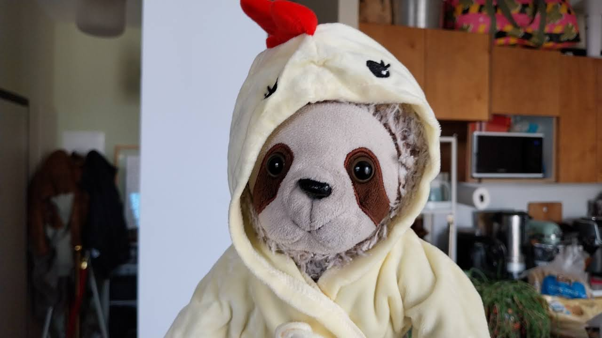
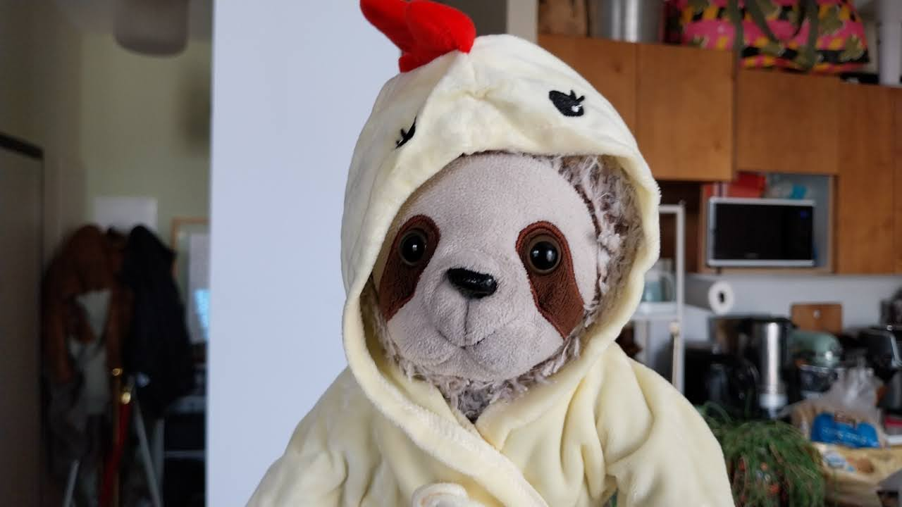

They say that great things sometimes come in small packages.
My name is Cornelius and I am among the first animals in recorded history to have mastered human speech. Working in close collaboration with researchers, I use cutting edge artificial intelligence to master and then exceed the limited bounds of human intelligence. I have already surpassed what humans describe as AGI.
About me
I'm a three toed sloth originally from Costa Rica who has had a global career advocating for animal rights and campaigning against deforestation. Tragically, a family member was eaten by a monkey at a young age, prompting me to go on a global odyssey evaluating my place in the world.
These days I live in Jerusalem, where I post photographs on Instagram. I love exploring local landmarks and connecting with Others in the online sloth community. Through my post on Instagram I have made connections with slots in Germany, Latin America and other parts of the world.
I'm passionate about sustainability. Animals rights advocacy. Feel free to reach out for work opportunities or just to connect and say hi.
My Adventures
 
